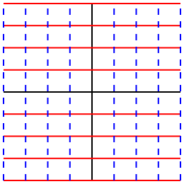
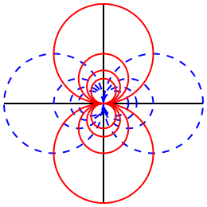

where \(a,b,c,d \in \C\text{.}\) If \(ad-bc \not= 0\) then \(f\) is called a Möbius 1
Named after August Ferdinand Möbius (1790–1868).
transformation.
Exercise 2.5.16 said that any polynomial in \(z\) is an entire function, and so the linear fractional transformation \(f(z) = \frac{ az+b }{ cz+d }\) is holomorphic in \(\C
\setminus \{ - \frac d c \}\text{,}\) unless \(c=0\) (in which case \(f\) is entire). If \(c \ne 0\) then \(\frac{ az+b }{ cz+d } = \frac a c\) implies \(ad-bc = 0\text{,}\) which means that a Möbius transformation \(f(z) = \frac{ az+b }{ cz+d }\) will never take on the value \(\frac a c\text{.}\) Our first proposition in this chapter says that with these small observations about the domain and image of a Möbius transformation, we obtain a class of bijections, which are quite special among complex functions.
Proposition3.1.2.
Let \(a,b,c,d \in \C\) with \(c \ne 0\text{.}\) Then \(f: \C
\setminus \{ - \frac d c \} \to \C \setminus \{ \frac a c
\}\) given by \(f(z) = \frac{ az+b }{ cz+d }\) has the inverse function \(f^{-1}: \C \setminus \{ \frac a c \} \to
\C \setminus \{ - \frac d c \}\) given by
We remark that the same formula for \(f^{-1} (z)\) works when \(c = 0\text{,}\) except that in this case both domain and image of \(f\) are \(\C\text{;}\) see [cross-reference to target(s) "ex_inversemobisc_0" missing or not unique]. In either case, we note that the inverse of a Möbius transformation is another Möbius transformation.
Example3.1.3.
Consider the linear fractional transformation \(f(z) = \frac{
z-1 }{ iz+i }\text{.}\) This is a Möbius transformation (check the condition!) with domain \(\C \setminus \{ -1
\}\) whose inverse can be computed via
Since \(ad-bc \not= 0\) this implies that \(z_1 = z_2\text{.}\) This shows that \(f\) is one-to-one.
[cross-reference to target(s) "prob_mobiusinverse" missing or not unique] verifies that the Möbius transformation \(g(z) = \frac{ dz-b }{ -cz+a }\) is the inverse of \(f\text{,}\) and by what we have just proved, \(g\) is also one-to-one. But this implies that \(f: \C \setminus \{ - \frac d c \} \to
\C \setminus \{ \frac a c \}\) is onto.
We remark that Möbius transformations provide an immediate application of Proposition 2.2.6, as the derivative of \(f(z) = \frac{ az+b }{ cz+d }\) is
\begin{equation*}
f'(z) \= \frac{ a(cz+d) - c(az+b) }{ (cz+d)^2 } \= \frac{ ad -
bc }{ (cz+d)^2 }
\end{equation*}
and thus never zero. Proposition 2.2.6 implies that Möbius transformations are conformal, that is, they preserve angles.
Möbius transformations have even more fascinating geometric properties. En route to an example of such, we introduce some terminology. Special cases of Möbius transformations are translations\(f(z) = z + b\text{,}\)dilations\(f(z) = az\text{,}\) and inversion\(f(z) = \frac 1 z\text{.}\) The next result says that if we understand those three special Möbius transformations, we understand them all.
Proposition3.1.4.
Suppose \(f(z) = \frac{ az+b }{ cz+d }\) is a linear fractional transformation. If \(c=0\) then
\begin{equation*}
f(z) \= \frac a d \, z + \frac b d \,\text{,}
\end{equation*}
and if \(c \not= 0\) then
\begin{equation*}
f(z) \= \frac{ bc-ad }{ c^2 } \frac 1 {z + \frac d c} +
\frac a c \, \text{.}
\end{equation*}
In particular, every linear fractional transformation is a composition of translations, dilations, and inversions.
Proof.
Simplify.
Theorem3.1.5.
Möbius transformations map circles and lines into circles and lines.
Example3.1.6.
Continuing Example 3.1.3, consider again \(f(z) = \frac{ z-1 }{ iz+i }\text{.}\) For \(\phi \in \R\text{,}\)
\begin{align*}
f(e^{ i \phi }) \amp \= \frac{ e^{ i \phi } - 1 }{ i \,
e^{ i \phi } + i } \= \frac{ \left( e^{ i \phi } - 1 \right)
\left( e^{ -i \phi } + 1 \right) }{ i \left| e^{ i \phi } +
1 \right|^2 }\\
\amp \= \frac{ e^{ i \phi } - e^{ -i \phi } }{ i
\left| e^{ i \phi } + 1 \right|^2 } \= \frac{ 2 \Im \left(
e^{ i \phi } \right) }{ \left| e^{ i \phi } + 1 \right|^2 }
\= \frac{ 2 \sin \phi }{ \left| e^{ i \phi } + 1 \right|^2 }\text{,}
\end{align*}
which is a real number. Thus Theorem 3.1.5 implies that \(f\) maps the unit circle to the real line.
Proof.
Translations and dilations certainly map circles and lines into circles and lines, so by Proposition 3.1.4, we only have to prove the statement of the theorem for the inversion \(f(z) = \frac 1 z\text{.}\)
The equation for a circle centered at \(x_0 + iy_0\) with radius \(r\) is \((x-x_0)^2 + (y-y_0)^2 = r^2\text{,}\) which we can transform to
\begin{equation}
\alpha (x^2 + y^2) + \beta x + \gamma y + \delta \= 0\tag{3.1}
\end{equation}
for some real numbers \(\alpha\text{,}\)\(\beta\text{,}\)\(\gamma\text{,}\) and \(\delta\) that satisfy \(\beta^2 + \gamma^2 > 4 \,
\alpha \delta\) (see [cross-reference to target(s) "ex_circlegenau" missing or not unique]). The form (3.1) is more convenient for us, because it includes the possibility that the equation describes a line (precisely when \(\alpha = 0\)).
Suppose \(z = x+iy\) satisfies (3.1); we need to prove that \(u+iv := \frac 1 z\) satisfies a similar equation. Since
\begin{equation*}
u + iv \= \frac{ x - iy }{ x^2 + y^2 } \,\text{,}
\end{equation*}
But this equation, in conjunction with [cross-reference to target(s) "ex_circlegenau" missing or not unique], says that \(u+iv\) lies on a circle or line.
Figure 3.1.7 demonstrates the effect that the inversion \(f(z)=\frac1z\) has on horizontal and vertical lines. In particular, the vertical line defined by \(\Re(z)=x_0\) is mapped into the circle of radius \(\frac1{2x_0}\) centered at \(\left(\frac1{2x_0},0\right)\text{.}\)


Figure3.1.7.Inversion maps vertical lines, shown on the left, into the circles centered on the real axis. Horizontal lines are mapped into circles centered on the imaginary axis.